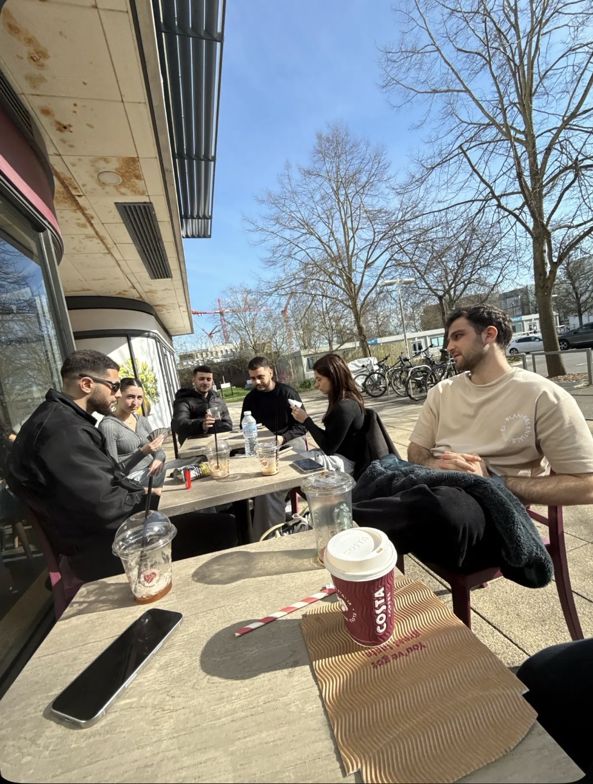

UOSM2017 · Intercultural Communication in a Global World
Slowness, Pace, and Cultural Value in an Intercultural Encounter
There are tables outside the Costa Coffee on Highfield campus that, on most days, belong to us. Not formally; no one has reserved them, and no one needs to. It is simply where the Cypriots sit. We pull them together; a loose arrangement that grows or shrinks depending on who shows up. The same faces, roughly the same time each day, ordering freddo espressos before the person behind the counter has finished asking. We stay for an hour, sometimes two or three; talking, playing cards, smoking, watching people pass. One sunny morning, a Russian acquaintance walked by, glanced at the tables, and said without hesitation: "I can visualise Cypriots sitting outside here." He was not Cypriot. He had not been told who we were. He simply looked at the scene and read it.
What he recognised was not a flag or a language but a set of practices; the outdoor seating chosen over the warmth inside, the unhurried conversation, the coffee ordered with the familiarity of a ritual repeated until it becomes reflex. He read slowness. And he knew where it came from. Collins (2008), in a study of South Korean international students in New Zealand, found that students frequented cafés not to assert their identity but to reproduce the sensory and social conditions of life before migration; the same drink, the same spatial arrangement, the same unhurried sociability. The freddo espresso at a British chain café is not the same as a coffee in Larnaca, but it is close enough to anchor something. Berry (1997) would describe what is happening at those tables as integration; retaining heritage practices while operating within a host environment. The Cypriot students have not retreated from Southampton. They have made a small piece of it familiar.
This portfolio is about that recognition; about what it means to carry a particular relationship to time, space, and sociability into a cultural environment that organises those things very differently. In Cyprus there is an expression for this orientation: siga siga, slowly slowly, an instruction and a philosophy simultaneously. The intercultural encounter I want to reflect on is not a single dramatic moment of misunderstanding but something quieter and more persistent; the daily friction of moving through a city whose default tempo is not mine, and the experience of watching my own cultural values become visible precisely because they do not blend in.
The contrast becomes sharper when you look more closely at the spaces themselves. Southampton has no shortage of coffee shops, but most close by six in the evening, some earlier. The tables are small and closely arranged; functional rather than comfortable, designed for a single drink and a departure rather than a second hour of conversation. The layout communicates something before a word is spoken: this space is for passing through, not for staying.

Costa Coffee, Highfield Campus, University of Southampton
What makes this more than a simple preference is that it holds even when the brand is the same. The Caffè Nero at Mackenzie Beach in Larnaca is a different kind of space entirely. It sits by the sea, with extensive indoor and outdoor seating, sofas and armchairs, large tables fitted with multiple plug sockets, and an atmosphere that assumes you will be there for a while. It is not a kafeneio; it is a modern global chain. But it has absorbed the local cultural expectation that a coffee shop is a place you inhabit rather than pass through, and its spatial design reflects that entirely.
Hall's (1966) concept of proxemics; the cultural encoding of space and its relationship to human behaviour; names what is happening in both cases. Space is never neutral. The arrangement of furniture, the ratio of seating to counter space, whether chairs are designed for comfort or turnover; all of this encodes assumptions about what people are supposed to do and for how long. The Larnaca Nero encodes lingering. The Southampton branch encodes departure. I felt that difference before I had the words for it; a low-level discomfort, a sense that staying too long was somehow inappropriate. The architecture was not hostile. It was simply indifferent to the kind of time I wanted to spend in it.
The same friction appears in motion. Walking to university each morning, I noticed that people around me move purposefully and quickly, with little room for looking around. On sunny days this shifts noticeably; people slow down, sit on grass, take longer routes. But those days feel like exceptions, brief suspensions of a default rather than the default itself. If I slowed down on an ordinary morning, the crowd moved around me without acknowledgement. I was not obstructing anyone. I was simply moving at the wrong speed.
I asked someone once whether they noticed they were walking fast. They paused, genuinely surprised, and said no; that was just how they walked. That response stayed with me. Over the following weeks I repeated the question informally; whenever I noticed someone walking at pace around campus or in the city centre, I asked whether they were aware of their speed. The results were roughly consistent: most said they had not noticed, a few were in a hurry for a specific reason, and some ignored the question entirely. Very few said yes without qualification. It was an informal exercise rather than a controlled study, but the pattern was striking enough to count as evidence. It was the honest response of people whose pace had become so internalised it was no longer visible as a choice. Simmel (1903) observed that city-dwellers absorb the metropolitan tempo through repeated exposure until it becomes their own; not a decision but a default. The environment had chosen for them, and they had stopped noticing.
This became most concrete arriving at London Waterloo station. I stepped off the train and within seconds my own pace had increased; not because I decided to move faster but because the crowd density, the timetable boards, and the layout of the concourse all pointed in one direction. Lefebvre (2004) describes this as linear rhythm; the tempo imposed by transport infrastructure and organised time, which the body absorbs before the mind can intervene. What stayed with me was not the acceleration itself but the moment I caught it happening; the sudden awareness that your body has been moved by a rhythm you did not choose.
London Waterloo Station concourse
Taken together, these encounters point toward something more structural than personal incompatibility. Hall (1976) distinguishes between monochronic cultures, which treat time as linear and scarce, scheduling tasks and designing spaces for efficient throughput, and polychronic cultures, which treat time as fluid and relational, prioritising presence and conversation over schedule. Neither is superior, but when you move from one into the other the collision is felt in the body before it is understood in the mind.
This is not a claim about all British people or all Cypriots. Holliday (1999) warns against reducing culture to fixed national characteristics; what he calls cultural blocks that flatten the complexity of how people actually live. What I am describing is a dominant rhythm in a specific environment. Levine and Norenzayan (1999) provide empirical grounding; their study of pace of life across thirty-one countries found that Western European cities consistently registered among the fastest, with Mediterranean countries significantly slower, and that economic development rather than national character was the strongest predictor. Speed is not a personality trait. It is a structural condition.
Rosa (2013) calls this social acceleration; the dominant tempo of a society becoming invisible to those living within it through what he describes as silent normative temporality powers. You do not see a sign telling you to hurry. The environment simply makes hurrying feel natural, and stillness feel like a deviation that requires justification.
There is one observation that complicates this picture and, I think, sharpens it. On sunny days in Southampton, something changes. People sit outside, slow down, stay a little longer. The city does not become Mediterranean, but the purposefulness of the daily tempo softens visibly. I initially read this as a contradiction. If people here can slow down, what was I actually describing?
The answer is permission. In Cyprus, slowness requires no occasion. It is the unmarked default; the pace you return to when nothing is pulling you elsewhere. In Southampton, slowness is available but it needs a reason; a rare sunny afternoon, a moment sufficiently exceptional to justify stepping outside the dominant rhythm. Rosa's (2013) silent normative temporality powers do not disappear on a sunny day. They are simply suspended temporarily by a stronger social signal. Holliday (2016) would recognise this as the difference between a cultural thread; a value present but not always visible; and a cultural block; a fixed, simplified characteristic. Slowness is a thread running through life here too. In Cyprus, it is simply the fabric itself.
What this encounter has taught me is something I could not have learned without leaving. In Cyprus, siga siga was familiar but unremarkable; a background condition I had never thought to examine. It took the friction of a different rhythm to give it weight.
Holliday (2016) argues that intercultural awareness begins not with understanding others but with seeing oneself; recognising that what felt like nature was always culture. That process, for me, has not been straightforwardly affirming. Living at a different pace has made me more attached to slowness as a value, but also more aware of what it costs; the things that do not get done, the urgency that sometimes genuinely matters. I do not think Southampton is simply faster and Cyprus simply wiser. I think the encounter has made both cultures legible to me in ways they were not before, and that legibility; uncomfortable as it sometimes is; is what intercultural experience is actually for.
the same body, two different rhythms
In early 2025, Cyprus found itself in proximity to a rapidly escalating regional crisis. Missile exchanges in the eastern Mediterranean brought the sounds of conflict close enough to be heard from the island's coastline. Around the same time, the Cypriot government conducted a test of its civil alert notification system; a mass text message sent to every mobile phone on the island. For many Cypriots, the combination of the two was unsettling in its proximity.
What followed on social media was a version of the same cultural reflex that Part 1 describes at the level of lived experience. Rather than adopting the language of urgency and crisis, many Cypriots reached for the slowest, most communal symbols in their cultural inventory; food, family, ritual, humour. As Stuart Hall (1997) argues, representation is never innocent; it is always an act of meaning-making tied to identity and power. That response was not universal, and the disagreement it generated reveals something important about how cultures represent themselves under pressure.
Among the responses that circulated most widely were two AI-generated videos, each from a different creator. That both chose AI as their medium is itself notable; the format allowed polished, shareable content to be produced and distributed within hours of the events, collapsing the distance between cultural reflex and cultural representation in a way that older forms could not.
The first, titled "Code Chalará" (Code Relax), was posted on Instagram by the account artificial.studio.cy. It depicts a group of Cypriots responding to nearby explosions not by seeking shelter but by loading a jeep with a grill and cooler, driving to a hilltop at Akrotiri, and holding a barbecue while detonations occur in the background. The gathering culminates in an Easter toast, accompanied by a traditional Easter Sunday song.
The second, titled "Cyprus Defence System: Activated 🚀", was posted on Facebook by Antonis Frangos and structured as a military defence sequence. The president commands operations from a war room while every weapon in the arsenal is replaced with a Cypriot cultural symbol; halloumi is launched from a military launcher surrounded by grazing sheep, zivania is fired as a rocket, and the final image is a yiayia leading the defence from the front, mounted on a flying donkey atop an armoured vehicle.
Shifman (2014) describes memes as units of popular culture that condense shared meaning into a repeatable, shareable form. These videos function precisely that way; they are not simply jokes but cultural capsules, simultaneously comedic and analytically legible, encoding a specific argument about Cypriot identity in a format designed to travel fast and wide.
Both videos refuse the cultural script that a crisis is supposed to activate. Where the dominant logic of threat demands urgency, vigilance, and readiness, both creators reach instead for the slowest, most communal register of Cypriot life. That two people working independently across different platforms arrived at the same reflex is itself significant; it points to something structural rather than personal. But the two videos make subtly different arguments, and the difference is worth attending to.
Barthes (1957) distinguishes between denotation, what an image literally shows, and connotation, the layered cultural meanings it carries. In "Code Chalará", the denotative content is straightforward: a group of people grilling meat on a hilltop. The connotative weight is considerably denser. The Easter Sunday barbecue in Cypriot life is not simply a way of cooking; it is one of the most polychronic occasions in the cultural calendar, an event defined entirely by presence, duration, and communal eating. Crucially, the toast at the end of the video is not directed at the detonations; it is an Easter toast, the kind exchanged every year at this gathering, happening precisely as it always would. The detonations are not the occasion. They are simply background to an occasion that was always going to take place. Hall (1976) would recognise this as polychronic time in its purest form; the relational and the ritual taking precedence over the external and the urgent. The crisis has not interrupted the Easter barbecue. The Easter barbecue has simply continued.
"Cyprus Defence System: Activated" makes a related but distinct claim. The weapons in this defence system are halloumi, pastourma, koupa, and zivania; not chosen for absurdity alone but because each is a culturally protected or deeply embedded symbol of Cypriot heritage, the kinds of things a yiayia would make herself. Stuart Hall (1997) argues that representation constructs meaning rather than reflecting it; this video constructs a very specific argument about where Cypriot power actually resides. The military hardware provides the structural frame, borrowed from the global visual language of conflict, but the payload is entirely local. And at the apex of the entire operation, leading from the front on a flying donkey, is the yiayia herself; not passive, not merely calm, but at the forefront. In Cypriot cultural life the grandmother is a figure of enormous social authority; the keeper of food, language, and tradition. The video makes that authority literal. Her kitchen is the defence system. She leads the way.
Where the first video says that Cypriot culture carries on regardless, the second says that Cypriot culture is itself a form of protection. Both require cultural literacy to be read correctly; without knowing what the Easter barbecue means, or what the yiayia represents, or why halloumi and zivania are not random props, the argument each video is making is simply invisible.
That the videos were funny to many Cypriots does not mean they meant the same thing to all of them. The comments sections of both videos show a culture actively debating its own representation, and that debate is analytically as significant as the videos themselves.
Hall's (1980) encoding/decoding model identifies three reading positions: dominant, negotiated, and oppositional. The comments illustrate all three clearly.
The dominant reading; accepting the videos as an accurate and affectionate portrait of Cypriot character; was widespread. The negotiated reading captured those who recognised the cultural truth while feeling uncertain about its timing. The oppositional reading rejected the framing entirely. One commenter addressed the generational dimension directly, writing in Greek that there are people who have lived through war and suggesting the creators ask their parents; an implicit reference to 1974 that grounds the disagreement in lived memory rather than abstract principle.
What the disagreement demonstrates is that Cypriot culture is not a unified bloc with a single relationship to humour and crisis. Holliday (1999) argues precisely this; that cultures are not homogeneous wholes but sites of internal difference, what he calls small cultures operating within and across larger ones. The videos encode one set of values confidently, but the comments reveal that those values are contested from within. Not every Cypriot found humour an appropriate register for the moment.
And yet the videos circulated widely, were watched repeatedly, and produced the kind of recognition that cultural objects produce when they have captured something real. Browning and Brassett (2023) argue that humour in geopolitical contexts is not merely a coping mechanism but a mode of asserting agency; a way of refusing the terms on which a crisis has been presented. That agency matters here precisely because Cyprus is a small island whose geopolitical situation is routinely narrated by others; larger powers, international media, external frameworks. These videos are Cypriots representing themselves, on their own terms, in their own cultural vocabulary. The Easter barbecue continues. The yiayia leads. What Part 1 describes as a daily friction; the experience of carrying a siga siga disposition through a faster world; Part 2 shows operating under far greater pressure. The same orientation, the same refusal to accelerate on someone else's terms. Cyprus, the videos propose, does not need to become something else in order to face what is coming.
Barthes, R. (1957/1972). Mythologies. Hill & Wang.
Berry, J.W. (1997). Immigration, acculturation, and adaptation. Applied Psychology, 46(1), 5–34.
Browning, C.S. and Brassett, J. (2023). Anxiety, humour and (geo)politics. International Relations, 37(1), 172–179.
Collins, F.L. (2008). Of kimchi and coffee. Social & Cultural Geography, 9(2), 151–169.
Hall, E.T. (1966). The Hidden Dimension. Doubleday.
Hall, E.T. (1976). Beyond Culture. Anchor Books.
Hall, S. (1980). Encoding/decoding. In S. Hall, D. Hobson, A. Lowe and P. Willis (eds.), Culture, Media, Language (pp. 128–138). Hutchinson.
Hall, S. (ed.) (1997). Representation: Cultural Representations and Signifying Practices. SAGE.
Holliday, A. (1999). Small cultures. Applied Linguistics, 20(2), 237–264.
Holliday, A. (2016). Difference and awareness in cultural travel. Language and Intercultural Communication, 16(3), 318–331.
Lefebvre, H. (2004). Rhythmanalysis. Continuum.
Levine, R.V. and Norenzayan, A. (1999). The pace of life in 31 countries. Journal of Cross-Cultural Psychology, 30(2), 178–205.
Rosa, H. (2013). Social Acceleration. Columbia University Press.
Shifman, L. (2014). Memes in Digital Culture. MIT Press.
Simmel, G. (1903/1950). The metropolis and mental life. In K. Wolff (ed.), The Sociology of Georg Simmel. Free Press.
Dominant reading
"This is us" · "THIS IS CYPRUS" · "Αυτοί είμαστε"
Negotiated reading
"I didn't want to laugh... but I did"
Oppositional reading
"War is not a joke. Have the decency and remove the post."